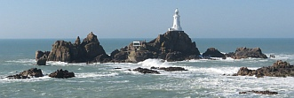

Chute semaine je m'en vais vos raconter une conversation qu'eu lieu l'aut'e jour dans not'e bureau.
Mais i' faut que j'vos diche devant c'menchi que je n'sis pas responsablye pour les opinions exprimées par les deux individus qu'y prinrent part.
Ch'tait un vier marinier du temps passé qu'avait navidgi dans l'Pâtruus, la Seaflower, l'Hematope et deustrais autres navithes qu'appartenaient ès bourgeais de y'a soixante-ans et qui viageaient redgulièthement entre Jerri et la Côte du Canada.
L'autre était un villais de nos amins, qu'est généralement au couothant de tout ch'qu'i' s'passe, mais qu'est un motcheux de la prumié trempe.
Ch'tait l'villais qui fut l'prumi à ouvri la distchussion.
 "Ah ça, maît'e Ph'lippe," qu'i' s'fit, "vous qu'êtes un vier naviguant avec une longue expérience, tch'est qu'ou criyiz de tout chu niollin-là qui pathu dans les gâzettes les aut'es jours, alentou des cô's d'la Mouaie qu'empêchithent le baté d'Weymue de s'amouocheler ser les rotchers?"
"Ah ça, maît'e Ph'lippe," qu'i' s'fit, "vous qu'êtes un vier naviguant avec une longue expérience, tch'est qu'ou criyiz de tout chu niollin-là qui pathu dans les gâzettes les aut'es jours, alentou des cô's d'la Mouaie qu'empêchithent le baté d'Weymue de s'amouocheler ser les rotchers?"
"Che n'est pas du niollin du tout!" s'êcriyi l'bouonhomme. "Mé qui vos pâle, je peux vos asseuther que ch'n'est pas la prumié feis que v'là tchi s'est arrivé. Et j'peux vos en donner la preuve. Ch'tait dans l'mais d'Novembre en septante-chinq, quand j'étais contre-maître à bord du Pâtruus.
Je r'venions de Paspédja avec une cartchaison d'mouothue et quand j'vinmes à appréchi des îles je rencontrîmes une bliâse que nou pouvait coper au couté.
V'là tchi mins l'Captaine de mauvaise humeur car j'avins fait une bouanne traversée et avec un mio d'chance je nos attendions de battre le r'cord de la Seaflower qu'avait fait l'passage dans seize jours.
Je pûmes justement vaie les Rocques d'Eaux en passant et l'Captaine réglyi sa course pour la Corbiéthe mais la bliâse vint à s'êpaissi et quand j'eûmes couothu une certaine distance je décidîmes qu'i' n'aithait pas 'té prudent d'aller pus liâin, ch'est pourtchi je d'cendîmes les velles et j'ancrîmes.
Le Cap'taine était d'une humeur de tchan et s'mins à arpenter l'pont en juthant comme un perdu.
Quand vint un temps i' s'calmi un mio et d'valli dans la chanbre.
J'avions un homme à faithe le quart sus l'châté et i' m'criyi: "Maît'e Ph'lippe, venez ichin une minute! I'm'semblye que j'vains de oui tchiquechose! Ecoutez!"
Et ou m'craithez s'ou voulez mais je ouîmes bain distinctement un co qui chantait.
Et chenna v'nait de terre car i' n'y avait pas une poule à bord, i'y avait longtemps j'avions mangi la derniéthe.
J'appelîmes tout-d'suite le Cap'taine et i' s'mins ès êcoutes ettou li et dans un moment ou deux le co chanti une deuxième feis. Le Cap'taine était bain gêné.
Je savions bain que j'étions tchiquebord sous les falaises mais nou n'viyait rain.
Je sondîmes tout alentou du navithe et v'là tchi nouos r'consoli un mio de trouver qu'i' y avait de l'ieau tout pliaine.
La nièt s'passi comme chenna et quand l'jour se fît les cô's chantaient comme de pus bé.
La bliâse se l'vi dans les djaix heuthes du matin et quand je réalisîmes not'e position les cheveux nos dréchithent sus la tête.
J'étions lanchis dans la baie d'St. Brélade sapresti! A chinquantes verges du Pliat Houmet. Ch'en 'tait-i' là une êcappée?
Et v'là pourtchi que j'dis mé que l'aut'e jour quand l'Cap'taine du St. Julien oui les cô's chanter, il eut bouanne raison de s'en aller au large."
Le villais avait êcouté l'bouonhomme bain attentivement sans l'interrompre mais i' persisti de faithe une riselée de tout chenna.

"Eh bain," qu'i' dit, "nos autorités dévethaient profiter de ches expériences-là et comme i' y en a qui trouvent que l'nouvel appatheil à la Corbiéthe ne donne pas toute la satisfaction voulue, i' dévethaient organiser un concours ouvert à touos nos êleveurs de volaille et accorder des prix d'valeur ès siens qui produithaient les cô's avec les miyeurs poumons et la pus forte vouaix. le Comité des Havres et Cauchies démand'daient ès Etats pour un vote d'une somme d'argent pour les acater dans l'but d'les mettre à la cherge du gardien d'la "Lighthouse." Un autre lot pouorrait être louogie dans la tour de Niermont et comme chenna, en temps d'bliâse la navigation n'aithait rain à craindre."
Caouain
Les Chroniques de Jersey 10/3/1934
Viyiz étout: